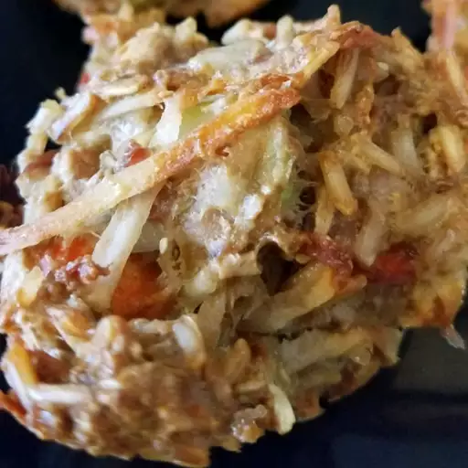

Poochie Meat Cakes

Don't be silly, it isn't made out of poochie meat!
No further questions.
Ingredients
- 1 ½ cups brown rice
- 3 cups water
- 2 large potatoes, grated
- 4 large carrots, grated
- 2 large celery stalks, chopped
- 6 pounds ground beef
- 8 eggs
- 1 dash salt
- ¼ cup olive oil
- 1 ½ cups regular rolled oats
Steps
- Preheat the oven to 400 degrees F (205 degrees C).
Grease 36 cups of 3 large muffin tins.
- In a medium saucepan, combine rice with water.
Bring to a boil over high heat, uncovered, and cook 10 minutes.
Reduce heat to low, cover, and simmer 20 minutes.
Remove from heat, let cool for
several minutes, then fluff with a fork and set aside.
- In a large bowl, combine potatoes, carrots, celery,
ground beef, and eggs. Mix ingredients together
using your hands or a sturdy spoon.
Add salt, olive oil, rolled oats, and rice; mix well.
- Fill each muffin cup with some meat mixture,
and pat down to make it firm. Bake 45 minutes,
or until surface feels set.
Cool on a rack 10 minutes or longer.
- Remove meat cakes by turning the muffin tin upside down
over a sheet of aluminum foil. Tap each muffin cup to
release the cake. Refrigerate or freeze in sealed plastic bags.
NOTE: Do not feed dogs while still hot.
Recipe Source: All Recipes